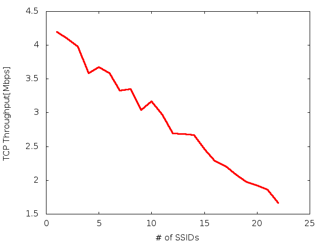

Mulți producători oferă posibilitatea de a avea mai multe SSID-uri pe un AP cu un singur card fizic, operând desigur pe același canal. Se vor transmite beacon-uri și se vor accepta autentificări/asocieri pe amblele SSID ca și cum ar fi separate, deși fizic este un singur card. Se consideră situația în care operăm doar în 802.11b
Se cere:
fit din gnuplot, sau fit manual. ns ./infra.tcl -run_tcp 0 -nn 2 -packetSize 150 -sendingRate 1Mbps
ns ./infra.tcl -run_tcp 0 -nn 2 -packetSize 150 -sendingRate 0.012Mbps
răspunde 10pps, se poate verifica scalarea cu număr mai mare de emițători
ns ./infra.tcl -run_tcp 1 -nn 2 -packetSize 1460
obținem 4.15Mbps.
> # setarea MCS diferențiat pentru noduri:
> if { $i <= 1} {
> Mac/802_11 set dataRate_ 11Mb ;# nodurile 0 și 1
> } else {
> Mac/802_11 set dataRate_ 1Mb ;# nodurile 2..(nn-1)
> }
> $ns_ node-config -macType $val(mac)
...
> # planificarea a 1 flux TCP 0->1, nn-2 fluxuri UDP/150/10pps=12Kbps
>
> for {set i 3} {$i < [ expr $val(nn) - 1]} {incr i} {
> attach-cbr-traffic $i 2 150 0.012Mbps $val(start0) $val(stop0) $i ;# emulare beaconuri
> puts "attached $i->2"
313a314
> attach-tcp-traffic 1 0 1460 $val(start0) $val(stop0) 1001 ;TCP
x=4; while [ $x -le 23 ]; do echo -n "$(($x-3)) "; ns ./infra1.tcl -nn $x | grep 'Throughput 1001'; x=$(($x+1)); done | tee b
gnuplot> plot 'b' using 1:4 w l
 … aproape dreaptă. La 10 SSID-uri rezultă cam 3Mbps, aproape de cât estimează și analiza.
> f(x) = a*x + b > fit f(x) 'b' using 1:4 via a,b > plot f(x) t 'fit', 'b' using 1:4 t 'data'
Ce valori rezultă pentru a și b?